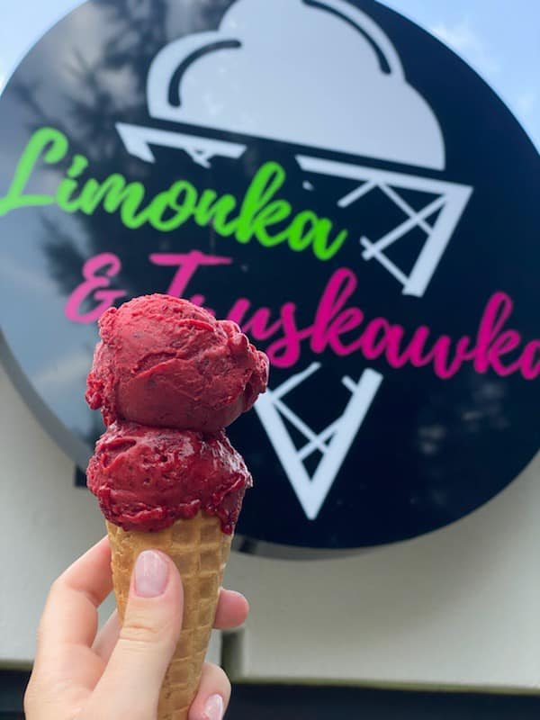
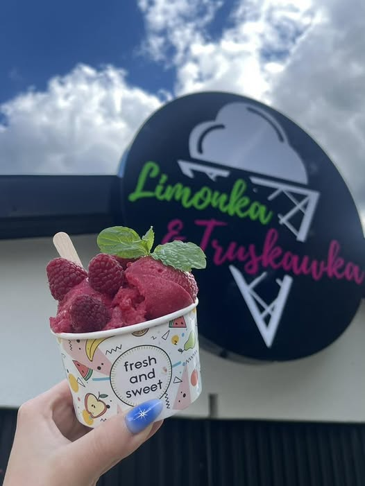
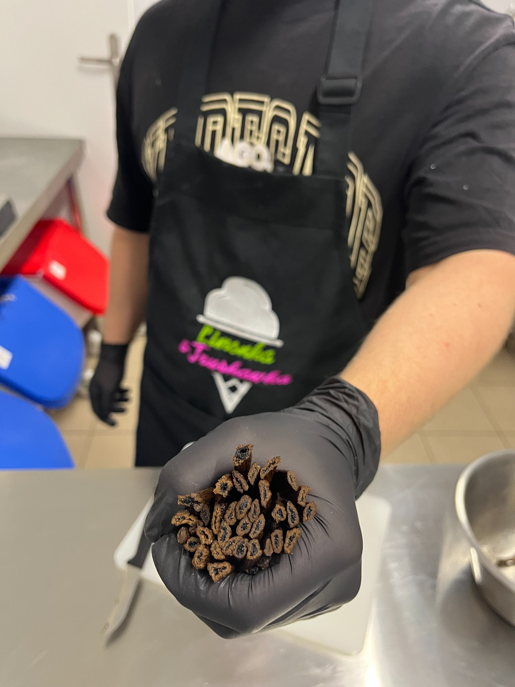
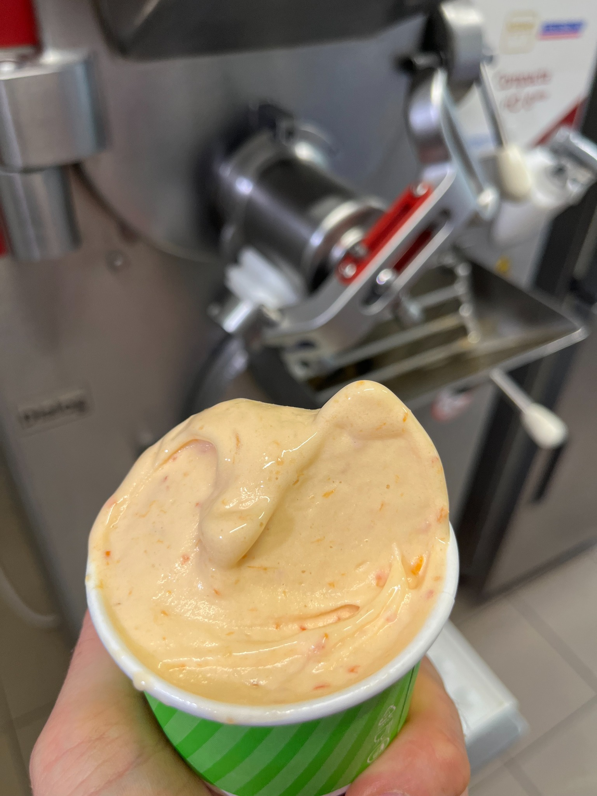
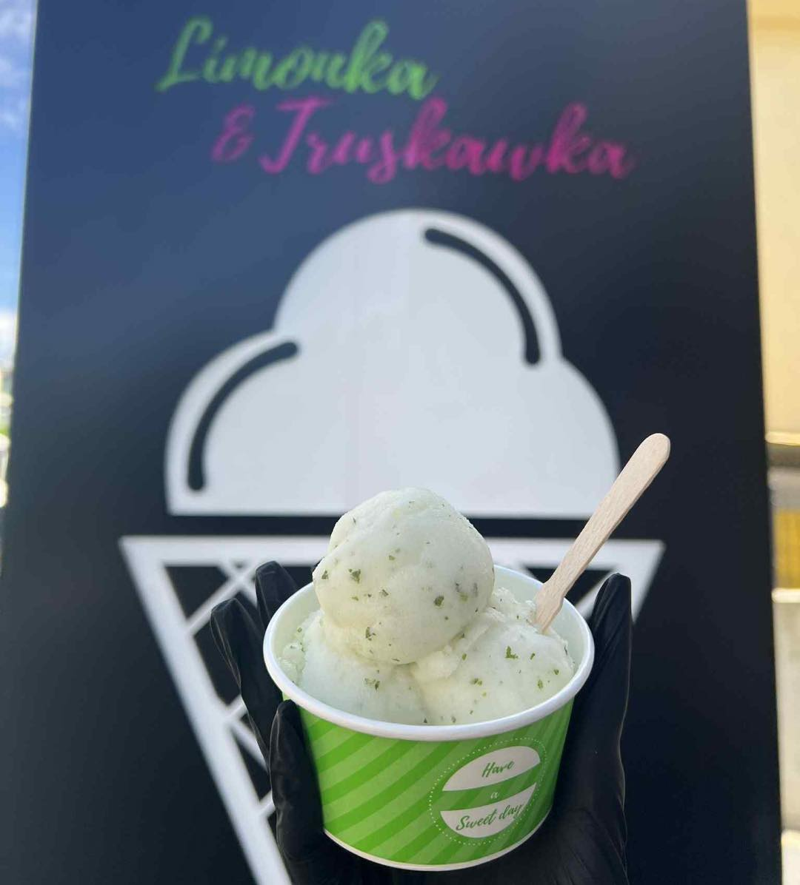
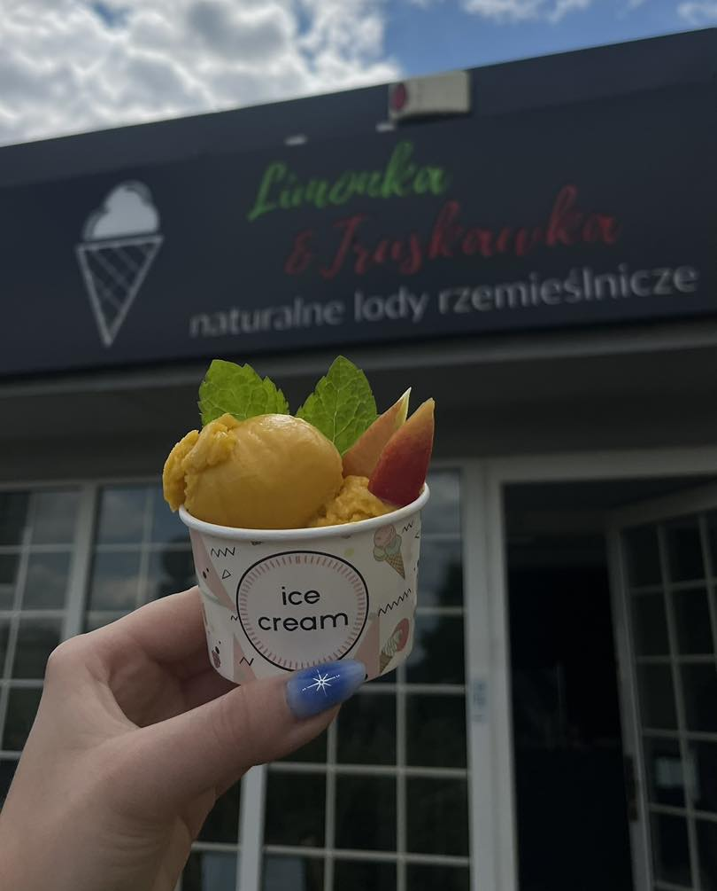
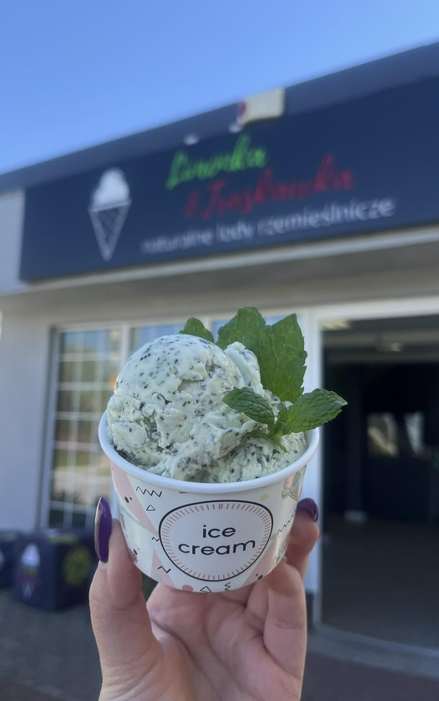
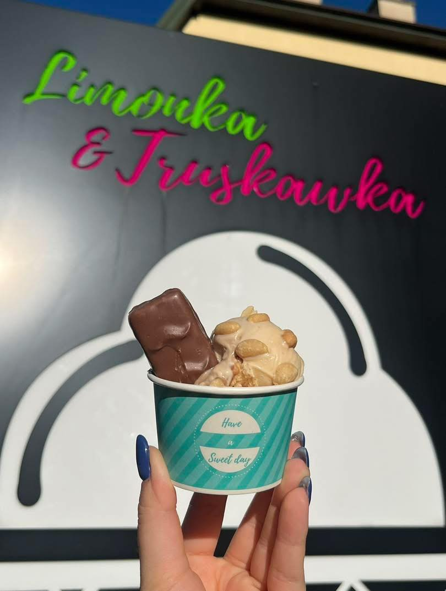
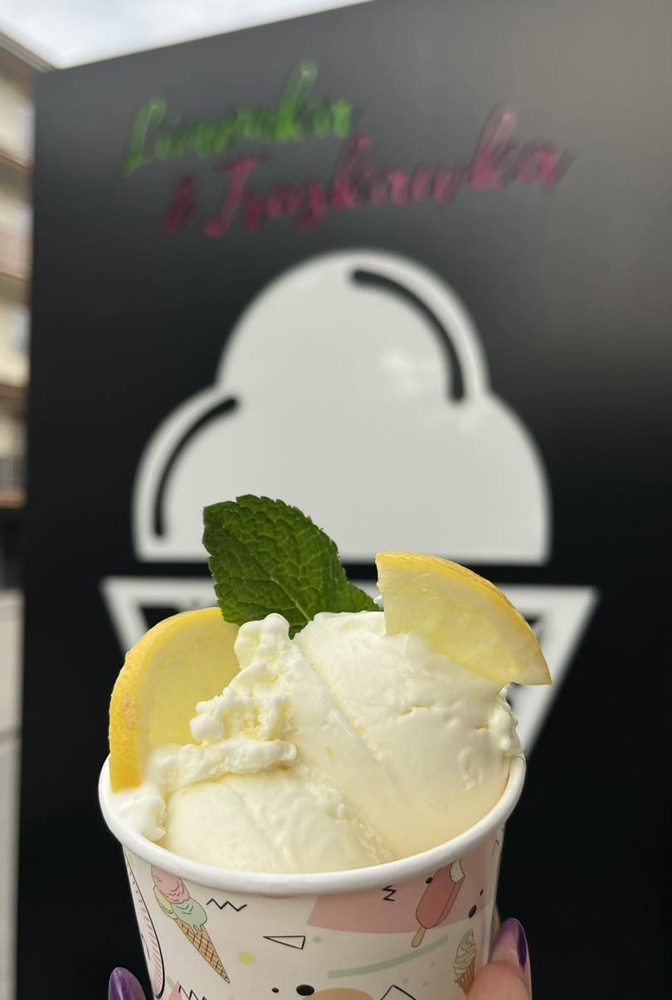

Truskawka
Owocowy sorbet o intensywnym, letnim smaku. Lekki, świeży i idealny na ciepłe dni.

Limonka & Truskawka to lodziarnia rzemieślnicza w Kielcach, w której stawiamy na własną produkcję lodów, świeże składniki i autorskie receptury.
Znajdziesz nas w kilku punktach Kielc. Wpadnij po gałkę, kubek albo porcję lodów na rodzinny spacer.
Oferta dla firmLimonka & Truskawka to lodziarnia rzemieślnicza w Kielcach, w której naturalne lody powstają w oparciu o własną produkcję, codzienną pracę i dbałość o smak, konsystencję oraz jakość. Stawiamy na składniki, sezonowe inspiracje i receptury, które wyróżniają się już od pierwszej łyżeczki.
Owoce, nabiał i dodatki wybierane z troską o smak.
Każda partia powstaje z uwagą i doświadczeniem.
Klasyka, sorbety i sezonowe kompozycje.

Najlepszy smak zaczyna się od dobrych składników i codziennej pracy. Film odtwarza się bez dźwięku.

Każdego sezonu przygotowujemy ponad 20 smaków lodów i sorbetów. Od klasycznej śmietanki i czekolady, przez owocowe sorbety, aż po sezonowe kompozycje tworzone w naszej pracowni w Kielcach.
Przewiń w bok, aby zobaczyć wybrane smaki.

Soczysta cytryna połączona ze świeżą miętą.

Orzeźwiający smak cytrusów z naturalną kwasowością.

Egzotyczny sorbet z dojrzałych owoców mango.

Kremowe mascarpone i soczyste mango.

Świeże, aromatyczne lody miętowe.

Wyrazisty sorbet z czarnej porzeczki.

Delikatna śmietanka z owocową galaretką.

Karmel, orzeszki i czekoladowy charakter.

Cytrusowa świeżość w sezonowej odsłonie.

Egzotyczny, intensywny smak marakui.
Od lat tworzymy lody rzemieślnicze, które mieszkańcy Kielc cenią za naturalny smak, wysoką jakość składników oraz codziennie przygotowywane receptury. Dzięki kilku lokalizacjom w mieście nasze lody są zawsze blisko.
Proste kompozycje, świeże owoce i jakość, którą czuć w smaku.
Każdego dnia przygotowujemy nasze lody we własnej pracowni, korzystając ze sprawdzonych składników i autorskich receptur. Dzięki temu mamy pełną kontrolę nad jakością, świeżością i smakiem każdej porcji.
Klienci chwalą smak, porcje, wybór i obsługę.
Nowe połączenia i owocowe sorbety idealne na ciepłe dni.
Wybierz najbliższą lokalizację w Kielcach i wpadnij na lody.
Lody tworzone z pasją, nie anonimowy produkt z hurtowni.
Nasze lody tworzymy z myślą o klientach, którzy szukają w Kielcach lodziarni rzemieślniczej z własną produkcją, naturalnymi składnikami i autorskimi smakami.
Zapraszamy do naszych punktów w Kielcach na naturalne lody rzemieślnicze, owocowe sorbety i sezonowe smaki.
Pokazujemy kulisy pracy, bo wierzymy, że własna produkcja lodów i jakość składników mają bezpośredni wpływ na smak.
Tworzymy lody dla rodzin, spacerowiczów i wszystkich, którzy lubią prawdziwy, intensywny smak.
Naturalne lody rzemieślnicze oceniane przez klientów za smak, naturalne składniki, duże porcje i miłą obsługę.
„Bardzo fajne miejsce. Lody są przepyszne, czuć w nich naturalne składniki. Miła obsługa. Polecam. My na pewno wrócimy.”Sylwia Dudzianiec
„Będąc w okolicy ulicy Klonowej zawsze zaglądam na pyszne lody. Pani Magda zawsze wita uśmiechem, a obsługa jest na najwyższym poziomie. Polecam. OREO FOREVER.”Karol Kozubek
„Lody ze śmietanką z galaretką mistrzostwo świata. Snickers, czekolada i pomarańcz również.”Dominik Kaczmarczyk
„Duże porcje, bardzo miła kasjerka.”Krzysztof
„Pyszne lody, miła obsługa – polecam.”Selekcjoner
Każdy punkt ma mapkę Google i przycisk do nawigacji.
Oferujemy sprzedaż hurtową lodów w Kielcach i województwie świętokrzyskim. Współpracujemy z kawiarniami, cukierniami, restauracjami, hotelami oraz organizatorami eventów.
To idealna oferta dla firm, które szukają sprawdzonego dostawcy lodów, wysokiej jakości produktu i elastycznych warunków współpracy.
Jeśli chcesz poznać pełną ofertę lodów dla swojej kawiarni, restauracji, cukierni lub punktu gastronomicznego, skontaktuj się z nami. Chętnie przedstawimy aktualne smaki oraz warunki współpracy.
Dostarczamy lody rzemieślnicze dla gastronomii w Kielcach: do kawiarni, cukierni, restauracji i punktów sezonowych.
Obsługujemy partnerów z województwa świętokrzyskiego, oferując klasyczne i sezonowe smaki w stałej jakości.
Wesela, komunie, pikniki rodzinne, festyny i imprezy firmowe — przygotujemy ofertę dopasowaną do wydarzenia.
Chcesz odwiedzić najbliższy punkt, zapytać o smaki albo porozmawiać o sprzedaży hurtowej lodów dla Twojego biznesu?
Telefon: 534 646 667
E-mail: limonkatruskawka@gmail.com
Social media: Facebook / Instagram